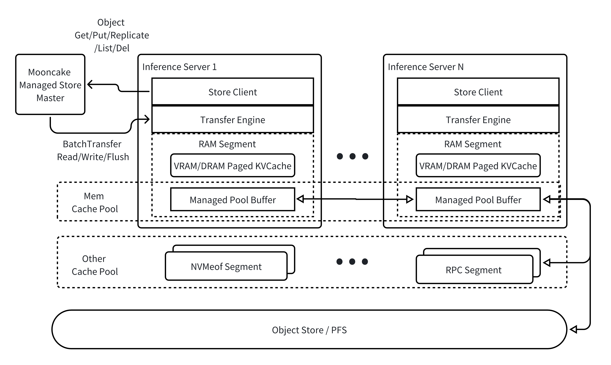

Mooncake Architecture#
Mooncake aims to enhance the inference efficiency of large language models (LLMs), especially in slow object storage environments, by constructing a multi-level caching pool on high-speed interconnected DRAM/SSD resources. Compared to traditional caching systems, Mooncake utilizes (GPUDirect) RDMA technology to transfer data directly from the initiator’s DRAM/VRAM to the target’s DRAM/VRAM in a zero-copy manner, while maximizing the use of multi-NIC resources on a single machine.
Mooncake:
provides object-level data storage services
supports data replication in the cache layer with slice-level placement guarantees and best-effort allocation, with a lightweight design due to not guaranteeing high availability
ensures the atomicity of object write operations, meaning a
Getoperation will always read one consistent version, but not necessarily the latest onesupports striping and parallel I/O transfer for larger objects to utilize the aggregated bandwidth of multiple network cards
supports multiple modes for flushing slow object storage
supports dynamic addition and removal of cache resources
Architectural Overview#

Mooncake provides object-level operations, i.e.
Get/Put/List/Del, and also supports dynamically configuring replication strategies (Replicateoperations);Mooncake supports zero-copy and multi-NIC data transfer over VRAM/DRAM/NVMe SSD. This feature is supported by Transfer Engine, which has been open-sourced;
The master node centrally manages the mappings of objects to VRAM/DRAM/NVM buffers. The master node also drives managed pool buffer nodes to achieve data transfer by calling Transfer Engine’s APIs;
Managed pool buffer nodes mainly provide DRAM space for storing objects.
Mooncake has open-sourced the Transfer Engine subsystem, and updates are forthcoming!